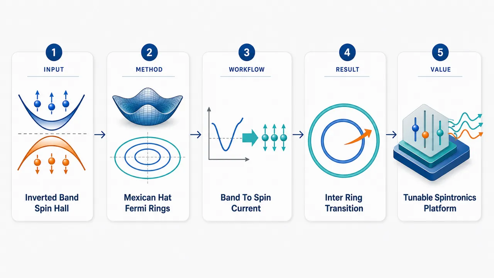
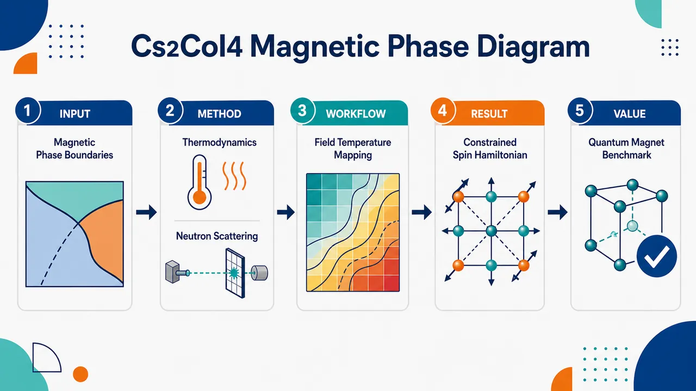
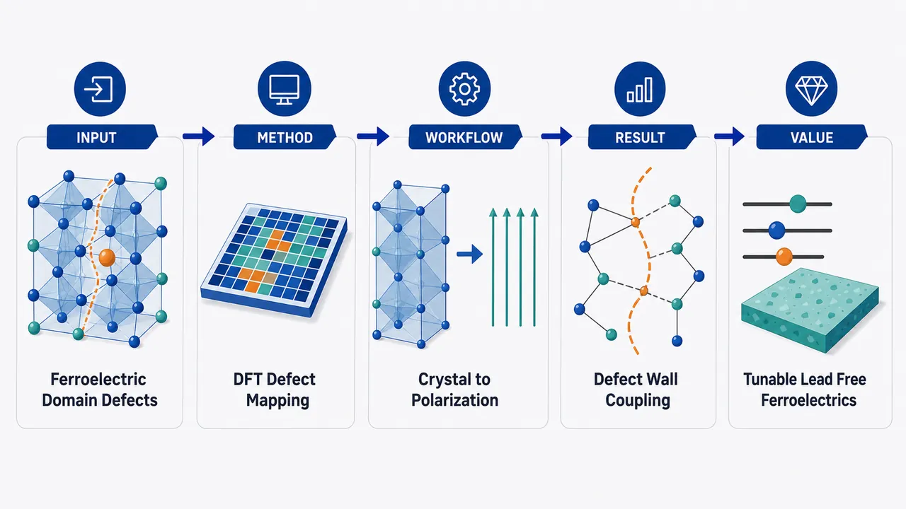
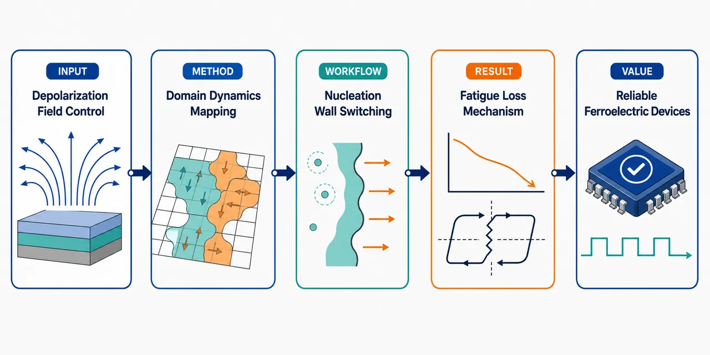
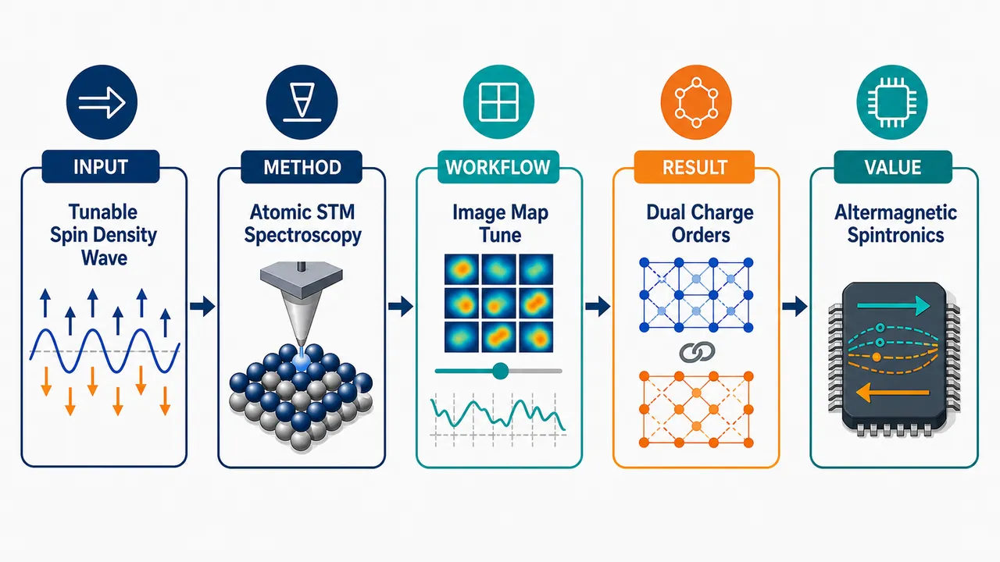

AI × Science 文献日报 2026/06/01
聚焦 AI × 物理 / 化学 / 材料交叉方向，自动过滤明显偏题的医学、教育与社会科学内容，并按主题重新排版，便于快速深读。
AI | 物理 | 化学 | 材料 | 交叉学科 | arXiv | 预印本追踪
原始候选 271 篇中，已剔除 0 篇明显偏离主线的内容，并从剩余 271 篇主线相关文献中精选 60 篇进入日报页，优先保留 AI × 物理 / 化学 / 材料交叉与关键计算方法工作。
核心关注（ML × ferro / 凝聚态）
8 篇今日论文把 ML 势和动力学从晶态铁电常见的 BaTiO3、NbOI2 问题，推进到多并苯分子晶体与碱金属钝化 Cu2ZnSnS4 的振动和缺陷复合时间尺度。方法侧重 GNN 多体相互作用、机器学习非绝热动力学、物理约束标量性质模型，而非 CrI3、CrSBr 磁性材料中常见的 DFT+U 参数扫描。势函数路线强调用振动动力学、非晶多体相关和小样本物理增强作外推检验，可迁移到 MACE、NEP、equivariant GNN 的凝聚态数据闭环。PINN、黎曼扩散、傅里叶神经算子和目标条件强化学习开始处理流形、接触、高频 PDE 等几何/动力学约束，适合描述极化畴、磁畴和缺陷迁移的非欧空间。
-
01多并苯分子晶体的精确机器学习势Accurate Machine Learning Interatomic Potentials for Polyacene Molecular Crystals: Application to Single Molecule Host-Guest Systems
📄 摘要：面向多并苯分子晶体构建机器学习原子间势，用振动动力学作为严格测试，并应用于单分子主客体体系的大尺度高精度模拟。
💡 亮点：以振动动力学检验多并苯晶体 MLIP 精度。
📐 方法要点：以振动动力学严测多并苯晶体机器学习原子间势。
🔗 相关工作关联：呼应 MACE、NEP、DeepMD 分子晶体势、声子谱基准、主客体缺陷模拟。
💡 对你方向的启示：有机铁电和分子晶体势函数应加入振动谱与客体扰动外推测试。
-
02用GNN预测非晶材料多体相互作用Using graph neural networks to predict many-body interactions in amorphous materials
📄 摘要：针对金属玻璃到生物组织等非晶体系，利用经典密度泛函理论生成参照信息，训练 GNN 预测多体相互作用，替代常用成对可加近似。
💡 亮点：GNN 用于非晶材料多体相互作用建模。
📐 方法要点：用经典密度泛函生成参照，训练 GNN 预测非晶多体相互作用。
🔗 相关工作关联：呼应非晶势能面、图神经网络、液体结构因子、超越成对势的粗粒化。
💡 对你方向的启示：非晶铁电、玻璃电解质建模可把多体相关显式纳入 ML 势标签。
-
03缺陷复合的机器学习非绝热动力学Machine learning accelerated nonadiabatic molecular dynamics of defect-mediated recombination in alkali metal passivated Cu 2 ZnSnS 4
📄 摘要：针对碱金属钝化 Cu2ZnSnS4 中缺陷介导的非辐射电子-空穴复合，建立机器学习加速框架，预测长时间非绝热耦合以降低动力学成本。
💡 亮点：机器学习延拓 Cu2ZnSnS4 缺陷非绝热耦合。
📐 方法要点：机器学习长时间非绝热耦合，加速缺陷复合 NAMD。
🔗 相关工作关联：呼应缺陷辅助非辐射复合、NAMD、钙钛矿/硫族半导体缺陷动力学。
💡 对你方向的启示：研究铁电光伏缺陷时，可用 ML 外推非绝热耦合而非只采短轨迹。
-
04电子亲和能的物理约束机器学习Physics-informed machine learning model for accurate prediction of electron affinities
📄 摘要：面向分子电子亲和能预测，将 CCSD(T) 近实验精度与 DFT 的可扩展性需求结合，构建物理约束机器学习模型以提高精度和效率。
💡 亮点：物理约束模型提升分子电子亲和能预测。
📐 方法要点：物理约束模型融合高精度电子亲和能与可扩展分子描述符。
🔗 相关工作关联：呼应 Δ-learning、DFT 到 CCSD(T) 校正、分子电荷转移能级预测。
💡 对你方向的启示：界面电荷俘获、极化筛蔽研究可借鉴物理约束标量性质校正。
-
05超级电容小数据的物理增强预测Physics-Informed Data Augmentation and Leakage-Free Deep Learning for Supercapacitor Capacitance Prediction from Small Experimental Datasets
📄 摘要：针对超级电容电极材料实验数据不足，结合深度学习与多方法物理信息数据增强，并强调无泄漏训练，用于电容预测的小样本建模。
💡 亮点：物理增强缓解超级电容电容预测小数据问题。
📐 方法要点：物理信息数据增强结合无泄漏深度学习预测小样本电容。
🔗 相关工作关联：呼应小数据材料信息学、超级电容电极、实验数据泄漏控制。
💡 对你方向的启示：铁电储能陶瓷小样本建模需把增强规则与划分策略同时审计。
-
06混合接触动力学的物理目标强化学习Physics-informed Goal-Conditioned Reinforcement Learning under Hybrid Contact Dynamics
📄 摘要：面向稀疏反馈下任意目标到达问题，在混合接触动力学中引入物理信息目标条件强化学习，学习状态-目标对的可达性并提升策略泛化。
💡 亮点：物理先验改善接触系统目标条件强化学习。
📐 方法要点：在混合接触动力学中学习状态—目标可达性的物理约束 RL。
🔗 相关工作关联：呼应目标条件强化学习、稀疏奖励控制、混合动力系统可达性分析。
💡 对你方向的启示：畴壁移动、离子迁移和相变路径搜索可引入可达性约束策略学习。
-
07物理神经网络的流形黎曼扩散模型Riemannian Diffusion Models on General Manifolds via Physics-Informed Neural Networks
📄 摘要：针对流形数据的黎曼扩散模型需采样并微分热核的难题，利用物理信息神经网络处理一般流形上的随机扩散方程训练。
💡 亮点：PINN 绕开一般流形热核难求问题。
📐 方法要点：用 PINN 近似一般流形随机扩散，训练黎曼扩散生成模型。
🔗 相关工作关联：呼应流形生成模型、热核扩散、SO(3) 自旋与取向序参量建模。
💡 对你方向的启示：磁矩方向、极化取向等非欧变量可用流形扩散避免平直空间偏差。
-
08求解高频PDE的多尺度可分傅里叶网络Multi-Scale Separable Fourier Neural Networks for Solving High-Frequency PDEs
📄 摘要：提出多尺度可分傅里叶神经网络 MS-SFNN，利用可分傅里叶结构高效求解线性与非线性高频偏微分方程，目标是兼顾精度和效率。
💡 亮点：MS-SFNN 面向高频 PDE 的高效求解。
📐 方法要点：多尺度可分傅里叶网络高效求解高频线性/非线性 PDE。
🔗 相关工作关联：呼应 Fourier Neural Operator、多尺度 PINN、波动方程与高频散射求解。
💡 对你方向的启示：畴壁振荡、磁振子和声子波包模拟可用频域结构提升解析度。
今日摘要
总览：今日条目集中在机器学习势与物理约束神经算子、交替磁体自旋电子学、铁电畴与缺陷调控三条主线：多并苯分子晶体的机器学习原子间势、非晶材料多体相互作用图神经网络、碱金属钝化铜锌锡硫缺陷复合的机器学习加速非绝热分子动力学，显示原子尺度动力学正从单一能量拟合转向缺陷、非绝热和多体项的联合建模。磁性部分覆盖交替磁体光伏纯自旋光电流、金红石型化合物铁性八极矩、笼目铯铬锑自旋密度波、范德华铁磁体/超导体/铁磁体自旋阀以及无限层镍酸盐镍氧杂化重构；铁电部分则聚焦无铅铁电超低压翻转、铯锗卤化物畴壁缺陷、退极化场控制薄膜畴翻转和弛豫铁电近准同型相界相变动力学。
热点：机器学习材料模拟 → 把物理约束、图结构和主动演化并入小数据或高维动力学 → 典型工作包括多并苯分子晶体机器学习原子间势、非晶多体相互作用图神经网络、铜锌锡硫缺陷复合非绝热分子动力学、超电容小实验数据物理增强、薄膜生长自演化动力学蒙特卡洛。交替磁体与反铁磁自旋电子学 → 利用自旋分裂但零净磁矩、八极矩序、磁致伸缩、手性磁振子和边缘态实现无外场自旋流或拓扑输运 → 代表题目为交替磁体光伏电池纯自旋光电流、交替磁体多重态选择光电子衍射、铯铬锑自旋密度波调控、二维交替磁体应变控制多拓扑相、强关联氟钙钛矿自旋轨道交替磁性。铁电畴工程与低功耗翻转 → 通过缺陷缩放、退极化场、畴壁缺陷和外场诱导相变调控矫顽电压与动力学路径 → 典型工作包括无铅铁电缺陷工程超低压翻转、铯锗氯溴碘卤化物畴壁和缺陷、铁电薄膜退极化场调控畴翻转、铅镁铌钛近准同型相界场诱导相变动力学。
今日文献
60 篇 · 20 含图深析-
01
📊 含图深析
💡 亮点：QASM-Eval 评测大模型的 OpenQASM-3 能力。
📖 展开分析 + 配图
研究问题现有大语言模型评测多停留在“量子门序列/量子电路”层面，缺少针对 OpenQASM-3 完整编程能力的基准，尤其难以评估模型是否理解硬件约束、时序控制、测量反馈、噪声受限 NISQ 设备上的可执行量子程序生成。创新方法构建 QASM-Eval 数据集，把 OpenQASM-3 从静态量子电路扩展到“面向真实量子硬件的程序语言”评测：不仅考察门操作，还覆盖硬件相关语法、控制流、经典-量子交互、设备约束与噪声场景，形成可用于训练和评估 LLM 的任务集合。工作流程输入为 OpenQASM-3 相关任务、硬件约束描述或量子程序需求；模型生成 OpenQASM-3 程序或补全代码；评测器检查语法正确性、语义一致性、硬件相关特性使用、是否超越简单量子电路表达；最终输出模型在开放量子汇编程序生成与理解上的能力分数。关键结果QASM-Eval 提供了一个专门面向 OpenQASM-3 的训练与评估基准，使研究者能够系统发现 LLM 在量子程序生成中的薄弱环节：例如只会生成门级电路、缺乏硬件时序意识、难以处理 NISQ 噪声限制下的程序结构。应用价值该数据集可推动面向量子编程的大语言模型开发，帮助模型生成更接近真实量子设备需求的 OpenQASM-3 程序，服务 NISQ 时代的量子软件自动化、硬件感知编译、量子算法原型设计与教育评测。核心概览
本文发布 QASM-Eval 数据集，用于训练和评估大语言模型处理 OpenQASM-3 程序，重点覆盖超出量子门序列/量子电路表示的硬件相关编程能力，面向 NISQ 噪声受限场景下的量子程序生成方向。
方法要点
- 构建面向 OpenQASM-3 的训练与评估数据集 QASM-Eval。
- 数据集关注 OpenQASM-3 中不局限于传统量子电路门序列的能力。
- 数据设计目标包含硬件相关特性，以支持 NISQ 设备上的程序生成评估。
- 摘要未详述数据规模、样本来源、任务类型、标注方式或评测指标。
关键结果
- 论文明确贡献是发布了 QASM-Eval 数据集。
- 该数据集可用于训练和评估大语言模型在 OpenQASM-3 上的能力。
- 数据集覆盖“超出量子电路”的 OpenQASM-3 特性，尤其是与硬件相关的能力。
- 其应用目标是支持 NISQ 噪声限制下的量子程序生成。
- 摘要未详述具体基准结果、模型性能提升或对比实验结论。
创新性判断
- 可能的新颖点在于：不同于只评估量子门序列或标准量子电路生成的工作，QASM-Eval 将评估范围扩展到 OpenQASM-3 更完整的语言能力，尤其是硬件相关编程特性。
- 其价值可能体现在为 LLM 量子程序生成提供更贴近真实 NISQ 设备约束的评测资源。
- 但由于摘要未详述已有数据集对比、覆盖维度和实验验证，创新性强弱仍需依赖全文确认。
-
02
📊 含图深析
💡 亮点：以振动动力学检验多并苯晶体 MLIP 精度。
📖 展开分析 + 配图
 研究问题如何为聚并苯分子晶体构建足够精确、可迁移的机器学习原子间势，使其不仅能描述晶体结构与分子间作用，还能经受严格的振动动力学检验，并进一步用于单分子主客体体系的大尺度模拟。创新方法以聚并苯分子晶体为目标体系训练机器学习原子间势，并用振动动力学作为高强度精度筛选器；核心亮点是把势函数从常规结构能量预测推进到可解析晶体声子、分子振动和主客体局域扰动的精细动力学层面。工作流程输入聚并苯分子晶体结构与参考原子级数据，训练机器学习原子间势；随后用振动动力学测试验证势函数精度；通过验证后，将模型扩展到含单个客体分子的主客体晶体体系，进行更大尺度、更长时间的分子模拟并输出结构与动力学行为。关键结果所得机器学习原子间势能够准确描述聚并苯分子晶体的原子相互作用，并在严格振动动力学测试中保持可靠表现；模型还可用于单分子主客体体系，支持传统高精度量子计算难以直接覆盖的大尺度模拟。应用价值该研究为有机分子晶体、主客体掺杂体系和单分子嵌入材料提供了高精度低成本的模拟工具，可用于预测晶体振动、局域缺陷效应、分子环境响应以及有机电子和光功能材料的结构性能关系。
研究问题如何为聚并苯分子晶体构建足够精确、可迁移的机器学习原子间势，使其不仅能描述晶体结构与分子间作用，还能经受严格的振动动力学检验，并进一步用于单分子主客体体系的大尺度模拟。创新方法以聚并苯分子晶体为目标体系训练机器学习原子间势，并用振动动力学作为高强度精度筛选器；核心亮点是把势函数从常规结构能量预测推进到可解析晶体声子、分子振动和主客体局域扰动的精细动力学层面。工作流程输入聚并苯分子晶体结构与参考原子级数据，训练机器学习原子间势；随后用振动动力学测试验证势函数精度；通过验证后，将模型扩展到含单个客体分子的主客体晶体体系，进行更大尺度、更长时间的分子模拟并输出结构与动力学行为。关键结果所得机器学习原子间势能够准确描述聚并苯分子晶体的原子相互作用，并在严格振动动力学测试中保持可靠表现；模型还可用于单分子主客体体系，支持传统高精度量子计算难以直接覆盖的大尺度模拟。应用价值该研究为有机分子晶体、主客体掺杂体系和单分子嵌入材料提供了高精度低成本的模拟工具，可用于预测晶体振动、局域缺陷效应、分子环境响应以及有机电子和光功能材料的结构性能关系。核心概览
该论文面向聚并苯分子晶体构建机器学习原子间势，重点评估其振动动力学精度，并将其应用扩展到单分子主客体体系的大尺度模拟，属于分子晶体计算模拟与机器学习势能函数方向。
方法要点
- 构建适用于聚并苯分子晶体的机器学习原子间势。
- 采用“严苛振动动力学测试”评估势函数精度；具体测试指标、基准方法和数据集摘要未详述。
- 将所构建势函数用于单分子主客体体系的大尺度模拟。
- 研究对象包括聚并苯分子晶体以及其相关的单分子主客体体系。
关键结果
- 摘要明确表明该机器学习原子间势具有较高精度，尤其通过振动动力学测试得到验证。
- 该势函数可扩展应用于单分子主客体体系的大尺度模拟。
- 摘要未详述具体误差数值、与传统力场或第一性原理方法的对比结果。
- 摘要未说明模拟规模、时间尺度、所研究的具体聚并苯种类或主客体分子构型。
创新性判断
- 可能的新颖点在于：针对聚并苯分子晶体建立专门的机器学习原子间势，而非使用通用经验力场；但具体相对已有势函数的优势摘要未详述。
- 以振动动力学作为严格验证标准，说明作者关注分子晶体中对势能面曲率和低频模式较敏感的性质，这可能是区别于仅验证能量/力误差工作的亮点。
- 将势函数进一步用于单分子主客体体系的大尺度模拟，可能体现了从晶体训练/验证到复杂缺陷或掺杂体系应用的可迁移性；但迁移性验证细节摘要未给出。
- 总体看，创新性可能集中在“高精度机器学习势 + 分子晶体振动动力学验证 + 主客体大尺度应用”的结合上，具体原创程度需依赖全文比较已有工作后才能确定。
-
03
📊 含图深析
💡 亮点：物理先验改善接触系统目标条件强化学习。
📖 展开分析 + 配图
 研究问题在机器人接触任务中，状态会因碰撞、接触、分离产生离散切换；传统稀疏奖励的目标条件强化学习难以判断“当前状态能否到达目标状态”，导致探索低效、策略学习不稳定。创新方法将混合接触动力学的物理约束嵌入目标条件强化学习，让智能体不只依赖稀疏成功信号，而是学习状态—目标对之间的物理可达性；Aha 点是用接触动力学规律为目标选择与策略学习提供可达性引导。工作流程输入当前状态、目标状态与接触环境信息；利用物理约束刻画接触/非接触切换下的可行动作与状态转移；估计状态—目标可达性；据此筛选或重加权训练目标；强化学习策略在更可达的目标路径上更新；最终输出能在混合接触场景中完成目标的控制策略。关键结果相比仅依赖稀疏反馈的目标条件强化学习，物理信息引导可减少无效探索，提升可达目标识别能力，使策略在含接触切换的任务中学习更稳定、样本效率更高、目标达成表现更好。应用价值适用于机器人推、抓、插入、装配等频繁发生接触切换的操作任务，可帮助机器人理解哪些目标在物理上可达，从而更快规划动作并提高复杂接触环境中的任务成功率。
研究问题在机器人接触任务中，状态会因碰撞、接触、分离产生离散切换；传统稀疏奖励的目标条件强化学习难以判断“当前状态能否到达目标状态”，导致探索低效、策略学习不稳定。创新方法将混合接触动力学的物理约束嵌入目标条件强化学习，让智能体不只依赖稀疏成功信号，而是学习状态—目标对之间的物理可达性；Aha 点是用接触动力学规律为目标选择与策略学习提供可达性引导。工作流程输入当前状态、目标状态与接触环境信息；利用物理约束刻画接触/非接触切换下的可行动作与状态转移；估计状态—目标可达性；据此筛选或重加权训练目标；强化学习策略在更可达的目标路径上更新；最终输出能在混合接触场景中完成目标的控制策略。关键结果相比仅依赖稀疏反馈的目标条件强化学习，物理信息引导可减少无效探索，提升可达目标识别能力，使策略在含接触切换的任务中学习更稳定、样本效率更高、目标达成表现更好。应用价值适用于机器人推、抓、插入、装配等频繁发生接触切换的操作任务，可帮助机器人理解哪些目标在物理上可达，从而更快规划动作并提高复杂接触环境中的任务成功率。核心概览
本文属目标条件强化学习方向，尝试在稀疏奖励下引入物理约束，以处理混合接触动力学并学习状态—目标可达性。
方法要点
- 面向稀疏反馈的目标条件强化学习问题。
- 将物理约束或物理先验引入学习过程，以增强对动力学规律的利用。
- 关注混合接触动力学场景，即系统存在接触/非接触等不同动力学模式切换。
- 学习状态—目标对之间的可达性，用于指导目标达成或策略学习。
- 具体算法结构、损失函数、训练流程和实验设置摘要未详述。
关键结果
- 摘要明确指出：该方法用于使智能体学习状态—目标对之间的可达性。
- 摘要未详述定量实验结果、对比基线、性能提升幅度或适用任务范围。
- 摘要未说明是否在真实机器人、仿真环境或特定接触任务中验证。
创新性判断
- 可能的新颖点在于将“物理约束”与“目标条件强化学习”结合，用于稀疏反馈下的混合接触动力学问题。
- 另一个可能贡献是把状态—目标可达性作为学习对象，以缓解稀疏奖励和接触模式切换带来的探索困难。
- 这种创新性判断仅基于摘要，具体相对已有工作的差异、理论贡献和实验优势摘要未详述，无法确定。
-
04
📊 含图深析
💡 亮点：物理约束模型提升分子电子亲和能预测。
📖 展开分析 + 配图
 研究问题如何在避免 CCSD(T) 高计算成本的同时，突破传统 DFT 预测误差较大的限制，快速且准确地预测分子的电子亲和能。创新方法构建物理约束机器学习模型，将量子化学物理规律嵌入数据驱动预测框架，用机器学习学习分子结构与电子亲和能之间的映射，同时利用物理信息限制不合理预测，形成兼具速度与精度的预测工具。工作流程输入分子结构与相关量子化学特征，提取可表征电子结构的分子描述符，引入物理约束训练机器学习模型，对未知分子进行电子亲和能预测，输出接近高精度 CCSD(T) 水平的结果。关键结果模型在保持接近 DFT 计算效率的同时，提高电子亲和能预测精度，显著缩小与高精度 CCSD(T) 结果之间的误差，实现快速筛选与可靠预测的平衡。应用价值可用于大规模分子材料、催化剂、有机电子材料和氧化还原体系的电子亲和能快速筛选，降低高精度量子化学计算成本，加速分子设计与材料发现。
研究问题如何在避免 CCSD(T) 高计算成本的同时，突破传统 DFT 预测误差较大的限制，快速且准确地预测分子的电子亲和能。创新方法构建物理约束机器学习模型，将量子化学物理规律嵌入数据驱动预测框架，用机器学习学习分子结构与电子亲和能之间的映射，同时利用物理信息限制不合理预测，形成兼具速度与精度的预测工具。工作流程输入分子结构与相关量子化学特征，提取可表征电子结构的分子描述符，引入物理约束训练机器学习模型，对未知分子进行电子亲和能预测，输出接近高精度 CCSD(T) 水平的结果。关键结果模型在保持接近 DFT 计算效率的同时，提高电子亲和能预测精度，显著缩小与高精度 CCSD(T) 结果之间的误差，实现快速筛选与可靠预测的平衡。应用价值可用于大规模分子材料、催化剂、有机电子材料和氧化还原体系的电子亲和能快速筛选，降低高精度量子化学计算成本，加速分子设计与材料发现。核心概览
该论文面向量子化学性质预测，构建一种物理约束机器学习模型，用于在较低计算成本下准确预测分子电子亲和能，对标高精度 CCSD(T) 与快速但误差较大的 DFT 方法。
方法要点
- 研究对象是分子的电子亲和能预测，属于计算化学/量子化学与机器学习交叉方向。
- 方法核心是“physics-informed machine learning”，即将物理约束或物理先验引入机器学习模型。
- 论文以 CCSD(T) 作为高精度但高计算成本的参照背景。
- 论文以 DFT 作为计算较快但预测误差相对较大的对比背景。
- 摘要未详述具体模型结构、输入特征、训练数据来源、损失函数形式或物理约束的具体实现方式。
关键结果
- 论文声称所构建的物理约束机器学习模型可用于准确预测分子电子亲和能。
- 其目标是在精度与计算成本之间取得优于传统高精度量子化学计算和常规快速方法的平衡。
- 摘要未详述具体误差指标、基准数据集、与 CCSD(T)/DFT 的定量比较结果。
创新性判断
- 可能的新颖点在于将物理约束引入电子亲和能的机器学习预测，以提升模型的准确性与物理可靠性。
- 相比单纯数据驱动模型，该方法可能强调利用物理先验降低泛化误差；但摘要未说明具体物理信息类型，因此这一判断具有不确定性。
- 相比直接使用 CCSD(T)，其潜在创新价值在于以机器学习替代高成本计算，实现更高效率的电子亲和能预测。
- 相比 DFT，其潜在优势在于改善预测误差，但摘要未提供定量证据，无法判断提升幅度。
-
05
📊 含图深析
💡 亮点：机器学习延拓 Cu2ZnSnS4 缺陷非绝热耦合。
📖 展开分析 + 配图
 研究问题碱金属钝化 Cu2ZnSnS4 太阳能材料中，缺陷会像“复合陷阱”一样捕获电子和空穴，引发非辐射复合；核心问题是如何高效预测这种缺陷介导的长时间非绝热动力学过程，特别是非绝热耦合随时间的演化。创新方法提出机器学习加速的非绝热分子动力学框架，用模型学习短时间第一性原理动力学中的结构—电子耦合关系，再外推预测长时间非绝热耦合，实现对缺陷复合过程的快速模拟；Aha 点是用机器学习替代昂贵的长时间量子动力学计算。工作流程输入碱金属钝化 Cu2ZnSnS4 缺陷结构与短时间非绝热分子动力学数据；提取原子构型、缺陷态、电子-空穴耦合等特征；训练机器学习模型预测非绝热耦合；将模型用于长时间轨迹外推；输出缺陷介导复合动力学、复合趋势与钝化效果评估。关键结果机器学习框架能够加速获得长时间非绝热耦合信息，支持分析碱金属钝化后 Cu2ZnSnS4 中缺陷复合通道的变化，为判断钝化是否降低非辐射复合提供动力学证据。应用价值为筛选碱金属钝化策略、抑制 Cu2ZnSnS4 薄膜太阳能电池中的缺陷复合、提升载流子寿命和光电转换效率提供快速计算工具，也可推广到其他含缺陷半导体的非辐射复合研究。
研究问题碱金属钝化 Cu2ZnSnS4 太阳能材料中，缺陷会像“复合陷阱”一样捕获电子和空穴，引发非辐射复合；核心问题是如何高效预测这种缺陷介导的长时间非绝热动力学过程，特别是非绝热耦合随时间的演化。创新方法提出机器学习加速的非绝热分子动力学框架，用模型学习短时间第一性原理动力学中的结构—电子耦合关系，再外推预测长时间非绝热耦合，实现对缺陷复合过程的快速模拟；Aha 点是用机器学习替代昂贵的长时间量子动力学计算。工作流程输入碱金属钝化 Cu2ZnSnS4 缺陷结构与短时间非绝热分子动力学数据；提取原子构型、缺陷态、电子-空穴耦合等特征；训练机器学习模型预测非绝热耦合；将模型用于长时间轨迹外推；输出缺陷介导复合动力学、复合趋势与钝化效果评估。关键结果机器学习框架能够加速获得长时间非绝热耦合信息，支持分析碱金属钝化后 Cu2ZnSnS4 中缺陷复合通道的变化，为判断钝化是否降低非辐射复合提供动力学证据。应用价值为筛选碱金属钝化策略、抑制 Cu2ZnSnS4 薄膜太阳能电池中的缺陷复合、提升载流子寿命和光电转换效率提供快速计算工具，也可推广到其他含缺陷半导体的非辐射复合研究。核心概览
该论文研究碱金属钝化 Cu₂ZnSnS₄ 中缺陷介导的非辐射电子-空穴复合，属于光伏半导体缺陷动力学与机器学习加速非绝热分子动力学方向。
方法要点
- 构建机器学习加速框架，用于辅助非绝热分子动力学研究。
- 目标是预测较长时间尺度上的非绝热耦合。
- 研究对象为碱金属钝化的 Cu₂ZnSnS₄ 材料。
- 关注缺陷介导的非辐射电子-空穴复合过程。
- 具体机器学习模型、训练数据、动力学算法和验证方式：摘要未详述。
关键结果
- 摘要明确指出：该工作建立了一个机器学习加速框架。
- 该框架用于预测长时间非绝热耦合。
- 应用场景是碱金属钝化 Cu₂ZnSnS₄ 中缺陷介导的非辐射复合。
- 是否定量揭示复合速率变化、钝化效果强弱或具体缺陷类型：摘要未详述。
创新性判断
- 可能的新颖点在于将机器学习用于加速预测长时间尺度非绝热耦合，以突破传统非绝热分子动力学时间尺度受限的问题。
- 另一个潜在创新点是把该框架应用于碱金属钝化 Cu₂ZnSnS₄ 的缺陷复合机制研究，服务于薄膜光伏材料缺陷调控。
- 但摘要信息极少，无法判断其相对已有机器学习非绝热动力学方法的具体算法创新、性能提升幅度或物理发现深度；这些均需全文确认。
-
06
📊 含图深析
💡 亮点：GNN 用于非晶材料多体相互作用建模。
📖 展开分析 + 配图
 研究问题非晶材料（如金属玻璃、生物组织）内部粒子排列无长程有序，传统模型常把复杂相互作用简化为两体相互作用，难以准确刻画局部拥挤、结构异质性和多粒子协同效应；核心问题是如何从无序结构中预测真实的多体相互作用。创新方法将经典密度泛函理论的物理先验与图神经网络结合：把非晶体系表示为粒子节点和邻近关系边构成的图，让 GNN 在局部结构网络中学习超越两体势的多体关联；Aha 点是用“图上的消息传递”捕捉无序材料中隐藏的集体相互作用。工作流程输入非晶材料的粒子坐标与邻接关系；构建粒子相互作用图；基于经典密度泛函理论提供多体物理约束或目标；图神经网络在邻域间传递结构信息并聚合局部环境特征；输出每个粒子或局部区域的多体相互作用预测。关键结果模型能够识别传统两体近似遗漏的多体效应，在无序、复杂、局部环境差异显著的非晶体系中更准确地预测相互作用；结果表明 GNN 可有效学习非晶结构中的高阶粒子关联。应用价值为金属玻璃、生物组织等非晶材料提供更精确的相互作用建模工具，可用于理解结构稳定性、力学响应、玻璃化行为和材料设计，推动从微观无序结构预测宏观性能。
研究问题非晶材料（如金属玻璃、生物组织）内部粒子排列无长程有序，传统模型常把复杂相互作用简化为两体相互作用，难以准确刻画局部拥挤、结构异质性和多粒子协同效应；核心问题是如何从无序结构中预测真实的多体相互作用。创新方法将经典密度泛函理论的物理先验与图神经网络结合：把非晶体系表示为粒子节点和邻近关系边构成的图，让 GNN 在局部结构网络中学习超越两体势的多体关联；Aha 点是用“图上的消息传递”捕捉无序材料中隐藏的集体相互作用。工作流程输入非晶材料的粒子坐标与邻接关系；构建粒子相互作用图；基于经典密度泛函理论提供多体物理约束或目标；图神经网络在邻域间传递结构信息并聚合局部环境特征；输出每个粒子或局部区域的多体相互作用预测。关键结果模型能够识别传统两体近似遗漏的多体效应，在无序、复杂、局部环境差异显著的非晶体系中更准确地预测相互作用；结果表明 GNN 可有效学习非晶结构中的高阶粒子关联。应用价值为金属玻璃、生物组织等非晶材料提供更精确的相互作用建模工具，可用于理解结构稳定性、力学响应、玻璃化行为和材料设计，推动从微观无序结构预测宏观性能。核心概览
论文面向金属玻璃、生物组织等非晶材料体系，尝试用图神经网络（GNN）结合经典密度泛函理论，预测或表征传统上常被简化为两体项的多体相互作用，属于计算材料、软物质/非晶体系建模与机器学习交叉方向。
方法要点
- 将非晶体系中的粒子/结构关系表示为适合 GNN 处理的图结构。
- 使用图神经网络建模多体相互作用，而非仅依赖传统两体相互作用近似。
- 结合经典密度泛函理论，为多体效应建模提供物理理论框架。
- 研究对象包括金属玻璃、生物组织等非晶体系；具体数据来源、网络结构、训练方式摘要未详述。
关键结果
- 摘要明确指出该工作关注非晶体系中常被简化为两体项的多体相互作用。
- 摘要明确表明作者将经典密度泛函理论与 GNN 结合，用于建模多体效应。
- 是否实现了更高预测精度、在哪些材料体系上验证、与哪些基线比较，摘要未详述。
- 具体定量结果、误差指标、泛化能力或物理可解释性结论，摘要未详述。
创新性判断
- 可能的新颖点在于：将经典密度泛函理论与图神经网络结合，用于非晶材料中多体相互作用的预测，而不是沿用简化的两体相互作用描述。
- 相对传统非晶体系建模，该方法可能更适合捕捉局域结构环境引起的多体效应；但摘要未说明具体模型形式和验证结果，因此创新强度无法准确判断。
- 若论文确实建立了可泛化的 GNN 框架来学习密度泛函理论中的多体贡献，则其贡献可能在物理约束机器学习和非晶材料建模交叉处；这一点基于摘要合理推断，仍需全文确认。
-
07
📊 含图深析
💡 亮点：物理增强缓解超级电容电容预测小数据问题。
📖 展开分析 + 配图
 研究问题在超级电容器电极材料研究中，实验数据量小、材料参数稀疏且容易发生训练/测试数据泄漏，导致深度学习模型难以可靠预测电容；核心问题是如何在小型实验数据集上获得可信、泛化能力强的电容预测。创新方法提出“物理信息数据增强 + 防泄漏深度学习”框架：用多种符合超级电容器物理规律的约束方式扩展小样本数据，同时严格隔离训练集与测试集，避免增强样本或相似样本跨集合泄漏，使模型学到真实的材料—性能关系。工作流程输入小型实验电极材料数据，包括材料组成、结构/工艺特征与实测电容；先进行物理规则筛选与多方法数据增强，生成合理的虚拟样本；再执行防泄漏数据划分；随后训练深度学习预测模型；最终输出超级电容器电容预测值和模型性能评估。关键结果物理约束增强提升了小数据条件下的样本覆盖度，防泄漏流程避免了虚高评估；相比普通深度学习或无约束增强方法，该框架获得更稳定、更可信的电容预测性能，并能更准确反映模型在未知材料上的泛化能力。应用价值可用于快速筛选高电容超级电容器电极材料，减少试错实验成本，提升小样本材料数据的机器学习利用率，并为能源材料性能预测提供更可靠的建模流程。
研究问题在超级电容器电极材料研究中，实验数据量小、材料参数稀疏且容易发生训练/测试数据泄漏，导致深度学习模型难以可靠预测电容；核心问题是如何在小型实验数据集上获得可信、泛化能力强的电容预测。创新方法提出“物理信息数据增强 + 防泄漏深度学习”框架：用多种符合超级电容器物理规律的约束方式扩展小样本数据，同时严格隔离训练集与测试集，避免增强样本或相似样本跨集合泄漏，使模型学到真实的材料—性能关系。工作流程输入小型实验电极材料数据，包括材料组成、结构/工艺特征与实测电容；先进行物理规则筛选与多方法数据增强，生成合理的虚拟样本；再执行防泄漏数据划分；随后训练深度学习预测模型；最终输出超级电容器电容预测值和模型性能评估。关键结果物理约束增强提升了小数据条件下的样本覆盖度，防泄漏流程避免了虚高评估；相比普通深度学习或无约束增强方法，该框架获得更稳定、更可信的电容预测性能，并能更准确反映模型在未知材料上的泛化能力。应用价值可用于快速筛选高电容超级电容器电极材料，减少试错实验成本，提升小样本材料数据的机器学习利用率，并为能源材料性能预测提供更可靠的建模流程。核心概览
该论文面向超级电容器电极材料电容预测，在小型实验数据集条件下，结合深度学习、物理约束数据增强与防数据泄漏流程，属于材料信息学/储能材料性能预测方向。
方法要点
- 使用深度学习模型预测超级电容器电极材料的电容。
- 针对小型实验数据集进行数据增强。
- 数据增强引入“多方法物理约束”，以提升生成数据或扩充样本的合理性。
- 构建防泄漏的建模流程，避免训练、验证或测试阶段信息泄漏。
- 任务对象为超级电容器电极材料，目标变量为电容；具体输入特征、模型架构和增强算法摘要未详述。
关键结果
- 摘要表明该研究实现了基于小型实验数据集的超级电容器电容预测。
- 摘要强调物理约束数据增强与防泄漏深度学习流程的结合。
- 具体预测精度、对比基线、数据规模、泛化性能提升幅度等结果摘要未详述。
创新性判断
- 可能的新颖点在于：将物理约束数据增强系统性用于小样本超级电容器电容预测，以缓解实验数据不足问题。
- 另一可能创新点是强调“防泄漏”流程，这在小数据材料机器学习中较关键，可提升评估可信度。
- “多方法物理约束数据增强”可能区别于单纯统计增强或黑箱生成式增强，但具体物理约束类型和实现方式摘要未详述，因此创新强度无法准确判断。
-
08
📊 含图深析
💡 亮点：PINN 绕开一般流形热核难求问题。
📖 展开分析 + 配图
 研究问题如何在任意一般流形上构建分数生成扩散模型：既能遵循流形几何结构，又避免依赖通常难以解析、难以采样、难以微分的流形热核。创新方法用物理信息神经网络 PINN 学习黎曼扩散过程，把热方程、流形拉普拉斯算子和几何约束嵌入神经网络训练中，以神经近似替代显式热核，从而在一般流形上实现可训练的扩散生成。工作流程输入流形上的数据点与流形几何信息；构造满足黎曼热方程的 PINN；通过物理残差约束学习时间演化的密度或分数场；在反向扩散阶段沿流形切空间逐步去噪；输出符合目标流形分布的新样本。关键结果模型绕开了热核直接采样与求导瓶颈，使分数生成模型可扩展到更广泛的一般黎曼流形；生成过程保持流形约束，提升了复杂几何空间中扩散建模的可行性与通用性。应用价值适用于球面、旋转群、形状空间等非欧几里得数据生成，可服务于分子构象生成、机器人姿态建模、方向数据模拟、几何深度学习和科学计算中的流形概率建模。
研究问题如何在任意一般流形上构建分数生成扩散模型：既能遵循流形几何结构，又避免依赖通常难以解析、难以采样、难以微分的流形热核。创新方法用物理信息神经网络 PINN 学习黎曼扩散过程，把热方程、流形拉普拉斯算子和几何约束嵌入神经网络训练中，以神经近似替代显式热核，从而在一般流形上实现可训练的扩散生成。工作流程输入流形上的数据点与流形几何信息；构造满足黎曼热方程的 PINN；通过物理残差约束学习时间演化的密度或分数场；在反向扩散阶段沿流形切空间逐步去噪；输出符合目标流形分布的新样本。关键结果模型绕开了热核直接采样与求导瓶颈，使分数生成模型可扩展到更广泛的一般黎曼流形；生成过程保持流形约束，提升了复杂几何空间中扩散建模的可行性与通用性。应用价值适用于球面、旋转群、形状空间等非欧几里得数据生成，可服务于分子构象生成、机器人姿态建模、方向数据模拟、几何深度学习和科学计算中的流形概率建模。核心概览
本文属于流形生成建模 / 黎曼扩散模型方向，提出用物理信息神经网络（PINN）在一般流形上构造分数生成模型，以避免直接采样或微分通常不可得的流形热核。
方法要点
- 面向流形数据的 score-based / diffusion generative modeling。
- 在一般黎曼流形上构造扩散模型，而非局限于特定流形；具体适用范围摘要未详述。
- 用 PINN 近似或求解与流形扩散相关的对象，以绕开显式热核的采样与微分。
- 目标是避免依赖流形热核的闭式表达、采样过程或可微性；具体训练损失、网络结构和数值方案摘要未详述。
关键结果
- 摘要明确声称：该方法可用于一般流形上的黎曼扩散模型构造。
- 摘要明确指出：该方法避免了直接采样和微分流形热核这一通常不可得或困难的步骤。
- 具体实验结果、性能指标、对比基线、理论保证等摘要未详述。
创新性判断
- 可能的新颖点在于将 PINN 引入一般流形上的分数生成 / 黎曼扩散建模，用物理约束方式替代对热核的显式依赖。
- 相比依赖已知热核、特定流形结构或数值热核估计的方法，该工作可能更强调一般流形适用性；但具体是否优于已有方法、适用哪些流形，摘要未详述。
- 创新性判断存在不确定性，因为摘要未提供方法细节、理论分析或实验验证。
-
09
💡 亮点：物理粗化增强非结构几何 GNN PDE 代理。
📖 展开分析 + 配图
 研究问题非结构复杂几何上的 PDE 神经代理在长时推理或跨网格泛化时容易不稳定；核心问题是如何为多重网格图神经网络构建既保留物理结构、又适合粗尺度传播的图粗化表示。创新方法提出“物理信息粗化”策略：在图节点合并与粗网格构建时引入 PDE 物理约束，使粗尺度图不只是几何降采样，而是保留关键物理相互作用与守恒结构，作为多重网格 GNN 代理的稳定骨架。工作流程输入非结构几何网格与 PDE 状态变量；根据物理约束生成层级粗化图；在细网格与粗网格之间进行信息限制、粗尺度传播和细化校正；多重网格图神经网络输出稳定的 PDE 解预测。关键结果物理约束粗化提升了多重网格神经代理在非结构几何中的稳定性与可靠性，使粗尺度消息传递更符合真实 PDE 动力学，减少因普通图粗化造成的物理信息丢失。应用价值可用于复杂工程几何中的快速 PDE 仿真代理，例如流体、热传导、结构场等场景，在保持物理一致性的同时降低计算成本，为高效设计优化和实时仿真提供基础。
研究问题非结构复杂几何上的 PDE 神经代理在长时推理或跨网格泛化时容易不稳定；核心问题是如何为多重网格图神经网络构建既保留物理结构、又适合粗尺度传播的图粗化表示。创新方法提出“物理信息粗化”策略：在图节点合并与粗网格构建时引入 PDE 物理约束，使粗尺度图不只是几何降采样，而是保留关键物理相互作用与守恒结构，作为多重网格 GNN 代理的稳定骨架。工作流程输入非结构几何网格与 PDE 状态变量；根据物理约束生成层级粗化图；在细网格与粗网格之间进行信息限制、粗尺度传播和细化校正；多重网格图神经网络输出稳定的 PDE 解预测。关键结果物理约束粗化提升了多重网格神经代理在非结构几何中的稳定性与可靠性，使粗尺度消息传递更符合真实 PDE 动力学，减少因普通图粗化造成的物理信息丢失。应用价值可用于复杂工程几何中的快速 PDE 仿真代理，例如流体、热传导、结构场等场景，在保持物理一致性的同时降低计算成本，为高效设计优化和实时仿真提供基础。核心概览
本文面向非结构几何中的 PDE 神经代理求解，提出一种带物理约束的图粗化策略，用于多重网格图神经网络代理，以提升求解稳定性。属于物理信息机器学习、图神经网络与 PDE 代理建模方向。
方法要点
- 采用“物理约束粗化”策略，对非结构几何上的图/网格进行粗化。
- 将该粗化策略服务于多重网格式图神经网络代理求解器。
- 目标是改善 PDE 神经代理在非结构几何场景中的稳定性。
- 具体物理约束形式、粗化算法细节、网络结构与训练方式：摘要未详述。
关键结果
- 论文声称所提方法针对“非结构几何中 PDE 神经代理稳定性不足”的问题。
- 摘要明确表明，该方法用于多重网格图神经网络代理求解器。
- 是否在精度、泛化、计算效率或稳定性指标上取得提升：摘要未给出具体结果或数值。
- 实验数据集、对比方法、PDE 类型与评估指标：摘要未详述。
创新性判断
- 可能的新颖点在于：将物理约束显式引入图粗化过程，而不只是依赖纯几何或纯数据驱动的粗化准则。
- 另一可能创新在于：面向非结构几何中的多重网格 GNN PDE 代理，专门设计稳定性增强机制。
- 相比一般图神经 PDE 代理或传统多重网格方法，该工作可能强调“物理信息 + 粗化 + 多重网格 GNN”的结合。
- 以上创新性判断仅基于摘要推断；具体是否优于已有物理信息 GNN、多尺度 GNN 或代数多重网格粗化方法，摘要未详述。
-
10
💡 亮点：反常磁体被用于纯自旋光伏电流设计。
📖 展开分析 + 配图
 研究问题如何在无净磁化的交变磁体中，利用其动量依赖的自旋劈裂，在光照条件下产生不伴随净电荷流的纯自旋光电流。创新方法提出“交变磁自旋光伏电池”概念：把交变磁体作为光伏功能材料，利用其相反动量空间中的自旋分裂与对称性选择，使光生载流子形成方向分离的自旋流而抵消电荷流。工作流程入射光照射交变磁体材料 → 光激发电子-空穴对 → 动量依赖自旋劈裂筛选不同自旋通道 → 相反自旋载流子沿相反方向输运 → 输出纯自旋光电流。关键结果理论上证明交变磁体可在无宏观磁化背景下产生纯自旋光伏响应，实现自旋流与电荷流解耦，为光驱动自旋电流提供新机制。应用价值为低功耗自旋电子器件、无磁场光控自旋源、光伏-自旋转换器件和新型自旋电池设计提供材料平台与器件概念。
研究问题如何在无净磁化的交变磁体中，利用其动量依赖的自旋劈裂，在光照条件下产生不伴随净电荷流的纯自旋光电流。创新方法提出“交变磁自旋光伏电池”概念：把交变磁体作为光伏功能材料，利用其相反动量空间中的自旋分裂与对称性选择，使光生载流子形成方向分离的自旋流而抵消电荷流。工作流程入射光照射交变磁体材料 → 光激发电子-空穴对 → 动量依赖自旋劈裂筛选不同自旋通道 → 相反自旋载流子沿相反方向输运 → 输出纯自旋光电流。关键结果理论上证明交变磁体可在无宏观磁化背景下产生纯自旋光伏响应，实现自旋流与电荷流解耦，为光驱动自旋电流提供新机制。应用价值为低功耗自旋电子器件、无磁场光控自旋源、光伏-自旋转换器件和新型自旋电池设计提供材料平台与器件概念。核心概览
该论文属于自旋光伏/自旋电子学方向，提出利用交变磁体“无净磁化但具有动量依赖自旋劈裂”的特性，在光照下实现纯自旋光电流的交变磁自旋光伏电池概念。
方法要点
- 利用交变磁体作为核心材料平台，其特点是无净磁化但存在动量依赖的自旋劈裂。
- 将交变磁体特性与光伏效应结合，构想或提出“交变磁自旋光伏电池”。
- 目标是在光照激发下产生纯自旋光电流，即自旋流存在而净电荷流可能为零或被抵消；具体判据摘要未详述。
- 是否包含理论模型、第一性原理计算、器件仿真或实验验证，摘要未详述。
关键结果
- 摘要明确提出了一种“交变磁自旋光伏电池”的概念。
- 该器件利用交变磁体的动量依赖自旋劈裂，在光照下实现纯自旋光电流。
- 交变磁体无净磁化，因此该方案可能区别于传统铁磁材料驱动的自旋光电流机制。
- 具体材料体系、光电流大小、转换效率、温度条件和实验可行性等，摘要未详述。
创新性判断
- 可能的新颖点在于将“交变磁性”引入光伏自旋流产生机制，提出无需净磁化即可产生纯自旋光电流的器件概念。
- 相比传统铁磁或反铁磁自旋光伏方案，该工作可能强调交变磁体的动量依赖自旋劈裂可作为自旋选择性光生载流子分离机制；但具体机制摘要未详述。
- 若论文进一步证明纯自旋光电流可在无净磁化条件下稳定产生，则其创新性可能体现在拓展了交变磁体在光电自旋电子学中的应用场景。
- 由于摘要极短，无法判断其创新属于理论概念、材料预测、器件设计还是实验实现。
-
11
📊 含图深析
💡 亮点：自旋 Kadanoff-Baym 统一描述超快磁化动力学。
📖 展开分析 + 配图
 研究问题如何从第一性原理出发，在同一非平衡量子动力学框架中同时描述巡游铁磁体内电子、声子、磁振子与自旋轨道耦合的相互作用，揭示超快激发后电荷、自旋与晶格能量如何交换和演化。创新方法提出自旋空间的 Kadanoff-Baym 方程框架：把电子格林函数扩展为自旋矩阵形式，并将电子-声子、电子-磁振子、自旋轨道耦合统一写入第一性原理非平衡演化方程，实现对铁磁材料多自由度耦合动力学的无经验参数模拟。工作流程输入铁磁材料的第一性原理能带、自旋结构与相互作用参数；构建自旋分辨非平衡格林函数；在 Kadanoff-Baym 方程中加入电子、声子、磁振子和自旋轨道散射通道；时间推进求解；输出瞬态电子分布、自旋极化、磁化变化、声子/磁振子激发与能量流图像。关键结果框架能够同时追踪非平衡电子弛豫、晶格加热、磁振子产生和自旋角动量转移，揭示巡游铁磁体中超快退磁与自旋-晶格耦合过程的微观来源，为不同散射机制对磁化动力学的贡献提供可分辨的定量图景。应用价值可用于设计和解释超快激光操控磁性、飞秒退磁、自旋电子器件中的能量耗散与角动量传输，为高速度、低功耗磁存储和自旋轨道电子学材料筛选提供理论工具。
研究问题如何从第一性原理出发，在同一非平衡量子动力学框架中同时描述巡游铁磁体内电子、声子、磁振子与自旋轨道耦合的相互作用，揭示超快激发后电荷、自旋与晶格能量如何交换和演化。创新方法提出自旋空间的 Kadanoff-Baym 方程框架：把电子格林函数扩展为自旋矩阵形式，并将电子-声子、电子-磁振子、自旋轨道耦合统一写入第一性原理非平衡演化方程，实现对铁磁材料多自由度耦合动力学的无经验参数模拟。工作流程输入铁磁材料的第一性原理能带、自旋结构与相互作用参数；构建自旋分辨非平衡格林函数；在 Kadanoff-Baym 方程中加入电子、声子、磁振子和自旋轨道散射通道；时间推进求解；输出瞬态电子分布、自旋极化、磁化变化、声子/磁振子激发与能量流图像。关键结果框架能够同时追踪非平衡电子弛豫、晶格加热、磁振子产生和自旋角动量转移，揭示巡游铁磁体中超快退磁与自旋-晶格耦合过程的微观来源，为不同散射机制对磁化动力学的贡献提供可分辨的定量图景。应用价值可用于设计和解释超快激光操控磁性、飞秒退磁、自旋电子器件中的能量耗散与角动量传输，为高速度、低功耗磁存储和自旋轨道电子学材料筛选提供理论工具。核心概览
本文提出自旋量子空间的第一性原理 Kadanoff-Baym 方程框架，用于研究巡游铁磁体中电子、声子、磁振子及自旋轨道耦合的非平衡动力学。
方法要点
- 采用 Kadanoff-Baym 方程描述非平衡多体动力学。
- 将方程框架扩展到自旋空间，即使用 spinor 形式处理自旋相关自由度。
- 以第一性原理方式研究材料中的非平衡过程，而非依赖纯模型参数；具体实现细节摘要未详述。
- 同时纳入电子、声子、磁振子和自旋轨道耦合等相互关联的自由度。
- 研究对象聚焦于巡游铁磁体中的非平衡动力学。
关键结果
- 摘要明确称论文“建立”了一个自旋空间 Kadanoff-Baym 方程框架。
- 该框架面向第一性原理研究，可用于处理巡游铁磁体中电子、声子、磁振子及自旋轨道耦合的非平衡动力学。
- 摘要未详述具体计算体系、数值结果、验证案例或与实验/其他理论的比较。
创新性判断
- 可能的新颖点在于将 Kadanoff-Baym 非平衡格林函数方法与自旋量子形式、第一性原理材料描述相结合，用于统一处理巡游铁磁体中的电子、声子、磁振子和自旋轨道耦合动力学。
- 相比只处理电子非平衡或模型哈密顿量的工作，该框架可能更强调材料真实能带与多自由度耦合的统一描述；但摘要未详述实现层级，因此这一判断具有不确定性。
- 若文中确实同时自洽处理电子-声子-磁振子-自旋轨道耦合动力学，则其创新性可能在于多通道非平衡自旋动力学的第一性原理框架化；具体是否优于已有方法，摘要无法确定。
-
12
📊 含图深析
💡 亮点：缺陷工程推动无铅铁电纳米低压开关。
📖 展开分析 + 配图
 研究问题纳米级无铅铁电薄膜在厚度缩小时容易被漏电流主导，导致极化难以稳定翻转、开关电压难以下降；核心问题是如何突破漏电限制，实现可缩放的超薄无铅铁电体超低电压开关。创新方法通过缺陷工程精确调控碱基金属无铅铁电体，在材料内部构建可控缺陷分布，用缺陷来抑制漏电通道、稳定铁电极化，并降低极化翻转所需能垒；Aha 点是把通常被视为问题的“缺陷”转化为实现纳米缩放和低压开关的功能工具。工作流程输入碱基金属无铅铁电薄膜材料 → 在纳米厚度范围内进行缺陷设计与调控 → 优化缺陷浓度和分布以压制漏电 → 测量铁电极化与电流响应 → 在超低外加电压下触发稳定极化翻转 → 输出可缩放、低漏电、低功耗的无铅铁电开关器件。关键结果缺陷工程使无铅铁电体在纳米厚度下仍保持可开关铁电性，显著削弱漏电主导效应，并实现超低电压极化翻转，证明铅-free 铁电材料可在微型化器件中继续缩放。应用价值为低功耗、无铅、环境友好的铁电存储器、逻辑器件、传感器和神经形态电子器件提供材料设计路径，可推动纳米铁电器件从高电压实验结构走向低电压集成应用。
研究问题纳米级无铅铁电薄膜在厚度缩小时容易被漏电流主导，导致极化难以稳定翻转、开关电压难以下降；核心问题是如何突破漏电限制，实现可缩放的超薄无铅铁电体超低电压开关。创新方法通过缺陷工程精确调控碱基金属无铅铁电体，在材料内部构建可控缺陷分布，用缺陷来抑制漏电通道、稳定铁电极化，并降低极化翻转所需能垒；Aha 点是把通常被视为问题的“缺陷”转化为实现纳米缩放和低压开关的功能工具。工作流程输入碱基金属无铅铁电薄膜材料 → 在纳米厚度范围内进行缺陷设计与调控 → 优化缺陷浓度和分布以压制漏电 → 测量铁电极化与电流响应 → 在超低外加电压下触发稳定极化翻转 → 输出可缩放、低漏电、低功耗的无铅铁电开关器件。关键结果缺陷工程使无铅铁电体在纳米厚度下仍保持可开关铁电性，显著削弱漏电主导效应，并实现超低电压极化翻转，证明铅-free 铁电材料可在微型化器件中继续缩放。应用价值为低功耗、无铅、环境友好的铁电存储器、逻辑器件、传感器和神经形态电子器件提供材料设计路径，可推动纳米铁电器件从高电压实验结构走向低电压集成应用。核心概览
该论文属于无铅铁电材料与低功耗纳米器件方向，研究通过缺陷工程调控碱基金属无铅铁电体，以应对纳米厚度下漏电主导的缩放瓶颈，并实现超低电压铁电开关。
方法要点
- 采用“缺陷工程”作为核心调控手段，用于改善或重构无铅铁电体的电学行为。
- 研究对象为“碱基金属无铅铁电体”，具体材料成分摘要未详述。
- 目标场景是纳米厚度铁电体的尺寸缩放，重点针对漏电主导的问题。
- 以实现“超低电压开关”为性能目标，具体测试结构、电压范围和表征方法摘要未详述。
关键结果
- 论文声称通过缺陷工程实现了碱基金属无铅铁电体的超低电压开关。
- 该策略面向并可能缓解纳米厚度铁电体中由漏电主导的缩放瓶颈。
- 结果表明无铅铁电体在低电压、纳米尺度器件应用中具有进一步发展的潜力。
- 具体开关电压、漏电流、厚度、极化强度、循环稳定性等定量结果摘要未详述。
创新性判断
- 可能的新颖点在于将缺陷工程用于碱基金属无铅铁电体的缩放与低电压开关优化，而不是依赖传统含铅铁电体系。
- 相对常见的铁电缩放研究，该工作可能强调“漏电主导瓶颈”与“缺陷调控”之间的关联，但具体机理摘要未详述，需全文确认。
- “超低电压开关”若达到显著低于同类无铅铁电材料的水平，则可能具有器件应用创新性；但摘要未给出对比数据，创新幅度无法判断。
- 该研究的潜在价值在于兼顾无铅环保材料、纳米厚度缩放和低功耗开关三方面需求，但具体证据强度摘要未详述。
-
13
💡 亮点：反常磁体表现饱和各向异性磁致伸缩。
📖 展开分析 + 配图
 研究问题传统磁致伸缩研究主要集中在铁磁体；论文关注交变磁体中是否也能产生可观测的磁—机械耦合，并进一步揭示这种形变响应是否会随磁场方向表现出饱和与各向异性特征。创新方法将“磁致伸缩”这一铁磁体经典效应引入交变磁体体系，利用交变磁体特殊的自旋结构与晶格耦合，展示一种非传统、方向依赖的饱和磁—机械响应；Aha 点是：即使没有常规铁磁净磁化，交变磁体仍能产生清晰的磁致伸缩信号。工作流程选取交变磁体样品 → 施加不同方向与强度的外磁场 → 测量样品长度或应变变化 → 比较不同晶向下的磁致伸缩曲线 → 识别高场饱和行为与方向相关差异 → 得到交变磁体中的各向异性磁—机械响应图景。关键结果交变磁体中观察到饱和磁致伸缩：随磁场增强，应变响应逐渐达到平台；同时响应明显依赖磁场方向，呈现各向异性，说明交变磁体的自旋排列、晶体方向与机械形变之间存在强耦合。应用价值该研究拓展了磁致伸缩材料的范围，为基于交变磁体的磁控应变器件、低净磁化磁机械传感器、自旋电子器件以及可调谐磁弹性功能材料提供新的物理基础和材料方向。
研究问题传统磁致伸缩研究主要集中在铁磁体；论文关注交变磁体中是否也能产生可观测的磁—机械耦合，并进一步揭示这种形变响应是否会随磁场方向表现出饱和与各向异性特征。创新方法将“磁致伸缩”这一铁磁体经典效应引入交变磁体体系，利用交变磁体特殊的自旋结构与晶格耦合，展示一种非传统、方向依赖的饱和磁—机械响应；Aha 点是：即使没有常规铁磁净磁化，交变磁体仍能产生清晰的磁致伸缩信号。工作流程选取交变磁体样品 → 施加不同方向与强度的外磁场 → 测量样品长度或应变变化 → 比较不同晶向下的磁致伸缩曲线 → 识别高场饱和行为与方向相关差异 → 得到交变磁体中的各向异性磁—机械响应图景。关键结果交变磁体中观察到饱和磁致伸缩：随磁场增强，应变响应逐渐达到平台；同时响应明显依赖磁场方向，呈现各向异性，说明交变磁体的自旋排列、晶体方向与机械形变之间存在强耦合。应用价值该研究拓展了磁致伸缩材料的范围，为基于交变磁体的磁控应变器件、低净磁化磁机械传感器、自旋电子器件以及可调谐磁弹性功能材料提供新的物理基础和材料方向。核心概览
本文研究交变磁体中的磁致伸缩现象，报告其存在饱和且各向异性的磁—机械响应，属磁性材料/自旋电子学与磁弹耦合方向。
方法要点
- 将以往主要在铁磁体中研究的磁致伸缩问题拓展到交变磁体体系。
- 关注交变磁体的磁—机械响应特征，尤其是“饱和”和“各向异性”行为。
- 摘要未详述具体材料体系、测量手段、理论模型或计算方法。
关键结果
- 在交变磁体中观察或报告了磁致伸缩效应。
- 该磁—机械响应表现为饱和特征。
- 该响应具有各向异性。
- 摘要未详述饱和场、应变幅度、各向异性方向依赖、温度条件等具体结果。
创新性判断
- 可能的新颖点在于：将磁致伸缩研究从传统铁磁体扩展到交变磁体这一新型磁序体系。
- 交变磁体通常兼具零净磁化与动量空间自旋劈裂等特殊性质，因此其磁弹响应若具有饱和且各向异性的特征，可能为理解交变磁性与晶格耦合提供新证据。
- 但摘要信息极少，无法判断其创新是实验首次观测、理论预言、材料发现，还是机制解释；具体相对已有工作的突破程度摘要未详述。
-
14
💡 亮点：多重态选择 PED 提供反常磁实空间探针。
📖 展开分析 + 配图
 研究问题如何在实空间中直接识别和定位交变磁体的交变磁有序；传统光电子衍射难以区分不同磁性子晶格，需要一种能把磁性信息与原子位置同时编码的探测方式。创新方法提出“多重态选择光电子衍射”：把过渡金属芯能级谱线中的不同多重态区域分别视为不同的光电子发射源，利用多重态与局域磁环境的对应关系，让衍射图样自带磁性选择性，从而显影交变磁有序。工作流程选择交变磁材料样品 → 激发过渡金属芯能级光电子 → 在芯能级谱中分离不同多重态峰区 → 分别采集各多重态对应的光电子衍射图 → 对比不同衍射源的角分布与实空间散射特征 → 重构交变磁子晶格的空间排列。关键结果不同芯能级多重态区域产生可区分的光电子衍射图样，相当于从不同磁性原子环境发出的选择性信号；这些图样能够在实空间中揭示交变磁有序，而不仅是给出平均电子结构信息。应用价值为交变磁体提供一种元素选择、局域敏感、实空间可视化的磁结构探针，可用于验证新型无净磁矩磁性材料、解析自旋电子学材料中的隐蔽磁序，并辅助设计基于交变磁性的器件。
研究问题如何在实空间中直接识别和定位交变磁体的交变磁有序；传统光电子衍射难以区分不同磁性子晶格，需要一种能把磁性信息与原子位置同时编码的探测方式。创新方法提出“多重态选择光电子衍射”：把过渡金属芯能级谱线中的不同多重态区域分别视为不同的光电子发射源，利用多重态与局域磁环境的对应关系，让衍射图样自带磁性选择性，从而显影交变磁有序。工作流程选择交变磁材料样品 → 激发过渡金属芯能级光电子 → 在芯能级谱中分离不同多重态峰区 → 分别采集各多重态对应的光电子衍射图 → 对比不同衍射源的角分布与实空间散射特征 → 重构交变磁子晶格的空间排列。关键结果不同芯能级多重态区域产生可区分的光电子衍射图样，相当于从不同磁性原子环境发出的选择性信号；这些图样能够在实空间中揭示交变磁有序，而不仅是给出平均电子结构信息。应用价值为交变磁体提供一种元素选择、局域敏感、实空间可视化的磁结构探针，可用于验证新型无净磁矩磁性材料、解析自旋电子学材料中的隐蔽磁序，并辅助设计基于交变磁性的器件。核心概览
该论文提出一种“多重态选择光电子衍射”方法，用芯能级多重态区分光电子源，以实空间探测交变磁有序，属自旋/磁性材料表征方向。
方法要点
- 利用过渡金属芯能级光电子谱中的多重态结构作为分析对象。
- 将芯能级多重态的不同能量区域视为不同的光电子发射源。
- 结合光电子衍射信息，在实空间中探测交变磁有序。
- 目标体系为交变磁体，即具有特殊磁有序但摘要未详述具体材料或实验条件。
关键结果
- 摘要明确提出了一种“多重态选择光电子衍射”方法。
- 该方法可利用过渡金属芯能级多重态的不同区域来区分光电子来源。
- 该方法被用于实空间探测交变磁有序。
- 摘要未详述具体实验数据、空间分辨能力、材料体系、验证结果或定量性能。
创新性判断
- 可能的新颖点在于：不是仅用常规光电子衍射获取结构信息，而是进一步利用芯能级多重态的能量选择性来区分不同光电子源。
- 对交变磁有序的实空间探测是其潜在创新应用场景，尤其针对交变磁体这类近年来受到关注的磁性相。
- 该方法可能提供一种将局域电子多重态信息与实空间磁有序成像/识别相结合的表征思路。
- 但摘要极短，未说明与既有磁性光电子衍射、XMCD/ARPES/自旋分辨技术相比的具体优势，因此创新性强弱仍不确定。
-
15
📊 含图深析
💡 亮点：环形费米面改变二维拓扑体系自旋霍尔响应。
📖 展开分析 + 配图

研究问题二维拓扑绝缘体中，当能带发生倒置并形成“墨西哥帽”形色散时，自旋霍尔效应如何变化；尤其是环形费米面是否会引入新的等能轮廓间跃迁并改变自旋输运响应。创新方法将倒置能带、墨西哥帽色散和环形费米面作为统一视觉框架分析自旋霍尔效应，突出费米能级切过帽檐时出现的内外两条等能环之间跃迁这一关键机制。工作流程从二维材料的倒置能带结构出发，刻画墨西哥帽形能量色散；调节费米能级形成环形费米面；识别内外等能轮廓之间的电子跃迁通道；计算这些跃迁对自旋霍尔电导和自旋流的贡献。关键结果墨西哥帽色散使费米面由单一轮廓转变为内外双环结构，产生额外的等能轮廓间跃迁；这些跃迁显著影响自旋霍尔响应，使倒置能带二维材料中的自旋霍尔效应呈现与普通抛物色散不同的增强或异常特征。应用价值为利用二维拓扑材料设计可调控自旋流器件提供机制基础，可通过能带倒置、费米能级调节和环形费米面工程优化自旋霍尔效应，用于低功耗自旋电子学器件。核心概览
该论文研究二维拓扑绝缘体中倒置能带与墨西哥帽色散对自旋霍尔效应的影响，重点关注环形费米面带来的等能轮廓间跃迁机制。
方法要点
- 研究对象为具有倒置能带和墨西哥帽色散的二维拓扑绝缘体。
- 关注自旋霍尔效应这一自旋输运/拓扑物性问题。
- 将环形费米面作为关键能带结构特征进行分析。
- 考察环形费米面导致的不同等能轮廓之间的跃迁过程。
- 具体模型、计算框架、响应公式或数值方法摘要未详述。
关键结果
- 摘要明确指出：环形费米面会引入等能轮廓间跃迁。
- 论文分析了倒置能带和墨西哥帽色散条件下二维拓扑绝缘体中的自旋霍尔效应。
- 这些跃迁如何定量影响自旋霍尔响应，摘要未详述。
- 是否得到增强、抑制、符号变化或普适行为，摘要未详述。
创新性判断
- 可能的新颖点在于将“倒置能带 + 墨西哥帽色散 + 环形费米面”与二维材料中的自旋霍尔效应联系起来系统分析。
- 相比常规二维拓扑绝缘体自旋霍尔研究，该工作可能强调环形费米面引发的等能轮廓间跃迁这一特殊机制。
- 由于摘要极简，无法判断其是否提出新模型、新解析结果或新材料预测；上述创新性判断具有不确定性。
-
16
📊 含图深析
💡 亮点：中子散射解析 Cs2CoI4 的磁相图和模型。
📖 展开分析 + 配图

研究问题确定 S=3/2 反铁磁材料 Cs₂CoI₄ 在不同温度与磁场下的磁相边界，并回答其低温磁有序、场诱导相变与微观自旋相互作用如何共同决定磁相图。创新方法将热力学测量与中子散射直接结合：用比热/磁化等宏观异常定位相变线，用中子散射观察磁布拉格峰和自旋关联，再反向约束 Cs₂CoI₄ 的自旋哈密顿量参数，实现“相图—磁结构—交换作用”的闭环判定。工作流程输入 Cs₂CoI₄ 单晶样品，在变温、变磁场条件下采集热力学数据和中子散射谱；从热异常与散射峰位置提取磁相变点和磁有序波矢；绘制温度—磁场磁相图；最后用实验约束各向异性交换、可能的单离子各向异性及有效自旋模型，输出自旋哈密顿量。关键结果获得 Cs₂CoI₄ 的实验磁相图，识别反铁磁有序区域及磁场驱动的相边界；中子散射结果限定了磁结构特征，并显著缩小了可行自旋哈密顿量的参数空间，为 S=3/2 钴基卤化物的交换各向异性提供定量约束。应用价值为理解低维或受挫钴基反铁磁体中的场诱导量子磁相提供实验基准；所得磁相图和自旋哈密顿量可用于预测磁激发、比较理论模型，并指导寻找具有可调磁相和强自旋各向异性的量子磁性材料。核心概览
该论文研究 S=3/2 反铁磁体 Cs₂CoI₄，属于量子/低维磁性与中子散射方向；通过热力学和中子散射测量建立其磁相图，并约束自旋哈密顿量。
方法要点
- 对 Cs₂CoI₄ 进行了热力学测量，用于识别磁相变与相边界。
- 进行了中子散射测量，用于探测磁结构或磁激发信息。
- 综合实验结果构建该材料的磁相图。
- 利用实验约束其自旋哈密顿量参数或形式；具体模型项摘要未详述。
关键结果
- 给出了 S=3/2 反铁磁体 Cs₂CoI₄ 的磁相图。
- 对 Cs₂CoI₄ 的自旋哈密顿量进行了约束。
- 摘要未详述相图包含哪些相、相变温度/磁场、交换参数或各向异性强度等具体结果。
创新性判断
- 可能的新颖点在于：针对 Cs₂CoI₄ 这一具体 S=3/2 反铁磁体系，系统结合热力学与中子散射实验，建立磁相图并限制其微观自旋模型。
- 若此前该材料的相图或哈密顿量缺乏明确实验约束，则该工作可能提供了基础性实验参照；但摘要未说明与已有研究的差异，因此创新性强弱无法确定。
-
17
📊 含图深析
💡 亮点：DFT 系统刻画 CsGeX3 畴壁和点缺陷。
📖 展开分析 + 配图

研究问题全无机铁电卤化物钙钛矿 CsGeX₃（X=Cl、Br、I）中，铁电畴壁如何形成、移动并影响极化？常见点缺陷会怎样改变畴壁稳定性与宏观铁电响应？创新方法利用第一性原理 DFT 将“铁电畴壁”和“点缺陷”放在同一原子尺度框架中分析，直接比较 Cl/Br/I 三种卤素体系中畴壁结构、缺陷能量与局域极化变化，揭示缺陷—畴壁耦合这一影响铁电性能的关键机制。工作流程输入 CsGeCl₃、CsGeBr₃、CsGeI₃ 晶体模型与典型点缺陷构型；构建不同铁电畴壁超胞；通过 DFT 结构弛豫与能量计算获得稳定畴壁和缺陷位置；分析原子位移、电荷分布、缺陷形成能与局域极化；输出缺陷调控畴壁和极化行为的微观图像。关键结果计算揭示 CsGeX₃ 中畴壁与缺陷不是独立存在：点缺陷可在畴壁附近产生能量偏好，改变局域 Ge–X 框架畸变和极化方向；不同卤素 Cl、Br、I 会带来不同的畴壁稳定性与极化敏感性，说明化学组分和缺陷工程可共同调节铁电性能。应用价值为设计无铅、全无机铁电卤化物钙钛矿提供原子尺度指导，可用于通过卤素选择、缺陷控制和畴壁工程优化非易失存储、压电/热释电器件、光电探测与铁电光伏材料。核心概览
本文用第一性原理 DFT 研究全无机铁电卤化物钙钛矿 CsGeX₃（X = Cl、Br、I）中的铁电畴壁与常见点缺陷，关注它们对材料极化行为的影响，属于铁电卤化物钙钛矿缺陷与畴结构理论研究方向。
方法要点
- 采用密度泛函理论（DFT）对 CsGeX₃（X = Cl、Br、I）进行计算研究。
- 研究对象包括铁电畴壁以及常见点缺陷。
- 分析缺陷和畴结构如何影响材料的极化行为。
- 具体计算设置、模型尺寸、交换关联泛函、缺陷类型和畴壁类型等摘要未详述。
关键结果
- 摘要明确指出论文解析了缺陷与畴结构对 CsGeX₃ 极化行为的影响。
- 研究覆盖 CsGeCl₃、CsGeBr₃、CsGeI₃ 三种全无机铁电卤化物钙钛矿。
- 关于具体畴壁能、缺陷形成能、极化变化幅度、稳定性排序等结果，摘要未详述。
创新性判断
- 可能的新颖点在于将铁电畴壁与常见点缺陷统一纳入 DFT 框架，系统考察其对 CsGeX₃ 极化行为的影响。
- 相比只研究体相铁电性或单一缺陷的工作，该研究可能更强调“畴结构—缺陷—极化”之间的耦合关系。
- 其创新性强弱需依赖全文中的具体比较对象、计算深度和定量发现；摘要未提供足够信息作确定判断。
-
18
📊 含图深析
💡 亮点：退极化场主导铁电薄膜畴翻转动力学。
📖 展开分析 + 配图

研究问题铁电薄膜在外加电场翻转极化时，退极化场如何改变畴的成核、扩展与翻转路径，并进一步导致器件疲劳和能量损耗。创新方法将退极化场作为核心调控量来解析铁电畴切换动力学，把原本看似随机的畴翻转过程转化为可由内部电场分布解释的微观演化图景。工作流程以铁电薄膜为对象，施加电场诱导极化翻转；跟踪畴从局部成核、畴壁移动到整体切换的过程；分析退极化场分布对畴演化速度、方向和稳定性的影响；关联到疲劳与损耗机制。关键结果退极化场会显著调节畴翻转动力学：改变畴成核位置、畴壁推进方式和极化切换效率，是铁电薄膜疲劳增强与能量损耗的重要微观来源。应用价值为优化铁电存储器、传感器和低功耗电子器件提供可靠性设计依据，可通过控制薄膜结构和内部电场来降低疲劳、减少损耗并提升长期稳定性。核心概览
本文研究铁电薄膜中退极化场如何调控极化畴翻转动力学，属于铁电材料畴结构演化与器件可靠性方向。
方法要点
- 以铁电薄膜中的极化畴翻转动力学为研究对象。
- 重点考察退极化场对畴演化过程的调控作用。
- 将畴翻转机制与铁电器件中的疲劳、损耗问题联系起来分析。
- 具体实验、模拟或理论模型方法摘要未详述。
关键结果
- 论文指出退极化场会调控铁电薄膜中的极化畴翻转动力学。
- 研究旨在解析极化畴演化机制，尤其与疲劳和损耗相关的微观过程。
- 论文声称可为铁电器件可靠性分析提供微观依据。
- 摘要未详述具体观测结果、定量规律、材料体系、薄膜厚度或测试条件。
创新性判断
- 可能的新颖点在于将“退极化场”作为核心调控因素，系统关联到铁电薄膜畴翻转动力学以及疲劳、损耗机制。
- 相较一般关注畴结构静态形貌或宏观电学性能的研究，该工作可能更强调畴演化的动态机制及其可靠性意义。
- 但由于摘要未提供具体材料、技术路线、对比对象或定量结果，其创新性强弱无法确定，只能判断其潜在新意在于退极化场调控畴动力学的机制解析。
-
19
📊 含图深析
💡 亮点：STM/STS 揭示可控反常磁自旋密度波。
📖 展开分析 + 配图

研究问题在 kagome 磁体 CsCr3Sb5 中，电荷密度结构如何与交替磁性自旋密度波共存、耦合，并能否被外部局域探针调控。创新方法利用扫描隧道显微镜与扫描隧道谱学直接成像 CsCr3Sb5 表面的两类电荷密度相关结构，并在原子尺度上识别和操控交替磁性自旋密度波的空间分布，突出“电荷纹理—自旋密度波”可视化调控这一关键突破。工作流程制备 kagome 材料 CsCr3Sb5 样品 → 低温扫描隧道显微镜获取原子级表面图像 → 扫描隧道谱学测量局域电子态 → 分辨两类电荷密度调制结构 → 追踪交替磁自旋密度波信号 → 通过局域探针条件改变观察其可调控响应。关键结果实验观察到 CsCr3Sb5 中存在两种不同的电荷密度相关结构，并揭示交替磁性自旋密度波并非固定背景，而是具有可被局域调节的空间行为，显示电荷有序与特殊磁性之间存在紧密关联。应用价值为 kagome 磁体中电荷、自旋与晶格自由度的耦合研究提供原子尺度证据，并为设计可调控交替磁性器件、自旋电子学材料和新型量子功能材料提供实验基础。核心概览
该论文属于 kagome 磁性材料与自旋/电荷有序研究，利用 STM/STS 研究 CsCr₃Sb₅ 中电荷密度结构及可调控交替磁自旋密度波。
方法要点
- 采用扫描隧道显微镜（STM）观察 CsCr₃Sb₅ 的实空间电子/结构特征。
- 采用扫描隧道谱学（STS）探测局域电子态信息。
- 识别并区分了两类与电荷密度相关的结构。
- 研究交替磁（altermagnetic）自旋密度波在该材料中的可调控行为。
- 具体调控手段、实验温度、磁场或偏压条件等摘要未详述。
关键结果
- 在 kagome 材料 CsCr₃Sb₅ 中发现两类电荷密度相关结构。
- 揭示了交替磁自旋密度波的可调控行为。
- 结果表明 CsCr₃Sb₅ 中电荷有序与磁性自旋密度波之间可能存在关联，但摘要未详述其机制。
- 摘要未给出具体能隙大小、周期、相变温度或调控参数等定量结果。
创新性判断
- 可能的新颖点在于：在 CsCr₃Sb₅ 这一 kagome 磁体中，通过 STM/STS 直接观察到两类电荷密度相关结构，并关联到交替磁自旋密度波的可调控性。
- 相对同方向 kagome 材料研究，该工作可能突出“交替磁自旋密度波”这一较新的磁性自由度及其局域调控特征。
- 但由于摘要信息极少，无法判断其是否首次发现、调控方式是否独特，或与既有 CsCr₃Sb₅ / AV₃Sb₅ 系列研究相比的具体突破程度。
-
20
📊 含图深析
💡 亮点：MS-SFNN 面向高频 PDE 的高效求解。
📖 展开分析 + 配图
 研究问题高频线性与非线性偏微分方程求解中，传统神经网络难以同时捕捉快速振荡细节、多尺度频率成分，并保持高精度与低计算开销。创新方法提出多尺度可分傅里叶神经网络 MS-SFNN：将傅里叶特征按多尺度频率分解，并采用可分结构降低参数量与计算复杂度，使网络能更高效表达高频振荡解。工作流程输入 PDE 的空间/时间坐标与方程条件；通过多尺度傅里叶特征映射提取不同频段信息；可分傅里叶网络分别建模各维度频率结构；利用 PDE 残差、边界条件和初始条件训练；输出高频 PDE 的数值解场。关键结果MS-SFNN 在高频线性和非线性 PDE 上表现出更高求解精度，同时显著提升计算效率，能更稳定地恢复复杂振荡解的细节结构。应用价值适用于需要快速、精确模拟高频物理过程的场景，如波传播、振荡系统、多尺度科学计算和复杂工程仿真，为高频 PDE 提供更轻量的神经求解框架。
研究问题高频线性与非线性偏微分方程求解中，传统神经网络难以同时捕捉快速振荡细节、多尺度频率成分，并保持高精度与低计算开销。创新方法提出多尺度可分傅里叶神经网络 MS-SFNN：将傅里叶特征按多尺度频率分解，并采用可分结构降低参数量与计算复杂度，使网络能更高效表达高频振荡解。工作流程输入 PDE 的空间/时间坐标与方程条件；通过多尺度傅里叶特征映射提取不同频段信息；可分傅里叶网络分别建模各维度频率结构；利用 PDE 残差、边界条件和初始条件训练；输出高频 PDE 的数值解场。关键结果MS-SFNN 在高频线性和非线性 PDE 上表现出更高求解精度，同时显著提升计算效率，能更稳定地恢复复杂振荡解的细节结构。应用价值适用于需要快速、精确模拟高频物理过程的场景，如波传播、振荡系统、多尺度科学计算和复杂工程仿真，为高频 PDE 提供更轻量的神经求解框架。核心概览
论文提出多尺度可分傅里叶神经网络（MS-SFNN），用于求解线性与非线性高频 PDE，属于科学机器学习/神经算子或神经网络求解偏微分方程方向，重点强调精度与计算效率。
方法要点
- 提出一种名为 MS-SFNN 的多尺度可分傅里叶神经网络框架。
- 使用“可分傅里叶结构”来表示或处理高频 PDE 解中的复杂频率成分。
- 面向线性与非线性高频 PDE 问题进行求解。
- 多尺度设计用于适应高频 PDE 中可能存在的不同尺度特征；具体实现方式摘要未详述。
- 网络训练方式、损失函数、边界/初值处理、对比基线与实验设置摘要未详述。
关键结果
- 摘要明确声称 MS-SFNN 可用于求解线性和非线性高频 PDE。
- 摘要强调该方法在精度和计算效率方面具有优势。
- 具体精度指标、效率提升幅度、测试 PDE 类型及数值结果摘要未详述。
创新性判断
- 可能的新颖点在于将“多尺度”机制与“可分傅里叶结构”结合，用于高频 PDE 求解。
- 相比一般傅里叶神经网络或 PINN 类方法，该方法可能通过可分结构降低计算复杂度，并通过多尺度设计提升高频表达能力；但摘要未给出对比细节，因此该判断具有不确定性。
- 其创新性更可能体现在网络结构设计和面向高频 PDE 的效率/精度权衡上，而非单纯提出新的 PDE 数值格式；具体贡献边界摘要未详述。
- 21
- 22
- 23
-
24
💡 亮点：CRN 线性响应被映射到图电流与量子行走。
-
25
💡 亮点：自旋螺旋增强对光偏振不敏感的超快磁化。
- 26
- 27
- 28
- 29
-
30
💡 亮点：张量网络压缩格子 Boltzmann 流场数据。
- 31
- 32
- 33
-
34
💡 亮点：Schwinger 玻色子给出 BCAO 双锯齿序的涨落起源。
- 35
- 36
- 37
-
38
💡 亮点：对称化行列式神经量子态瞄准 Hubbard 高精度能量。
- 39
- 40
-
41
💡 亮点：α-T3 几何参数驱动反铁磁磁振子拓扑相变。
-
42
💡 亮点：交替磁体边缘态可形成自旋相关一维电子通道。
-
43
💡 亮点：自旋轨道耦合可主动反转交替磁体磁振子手性。
-
44
💡 亮点：电势分解方法可识别双层金属膜中的自旋流贡献。
- 45
-
46
💡 亮点：轨道序在强关联氟钙钛矿中诱导交替磁性。
-
47
💡 亮点：现实量子阱模型中磁场可诱导高阶拓扑角态。
- 48
- 49
- 50
-
51
💡 亮点：设备划分联合带宽分配降低 IIoT 联邦学习时延。
- 52
- 53
-
54
💡 亮点：神经网络闭合学习聚合物打印中的非牛顿黏度。
-
55
💡 亮点：GNN 子图解释接口可被用于模型抽取攻击。
- 56
-
57
💡 亮点：最大团复形让高阶图学习更可扩展。
- 58
- 59
- 60